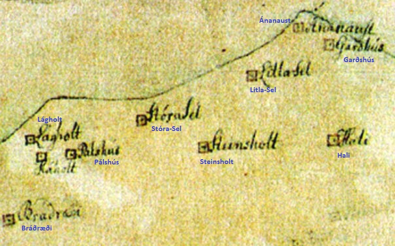

um 1850
Bráðræðisholtið er kennt við bæinn Bráðræði sem stóð þar sem nú er Grandavegur 37. Nokkrir torfbæir voru í grenndinni og töldust hjáleigur frá Seli eða Stóra-Seli eins og það var síðar kallað.
Auk Bráðræðis töldust Litla-Sel, Steinsholt, Pálshús, Lágholt og Háholt til hjáleiga Sels. Hali, Ánanaust og Garðshús voru í landi Hlíðarhúsa.

Bráðræði og nágrannabæir
um 1850